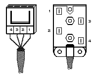
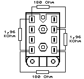

Previous
Next
TOC
Die ADO/VDO Dose der Telekom
Die ADO/VDO (ADO - Anschlußdose, VDO - Verbinderdose) Technik, ist
zwar mittlerweile veraltet aber funktioniert auch heute noch prob-
lemlos und wird generell gegen TAE Anschlußdosen und Stecker ausge-
tauscht.

Die Anschlußbelegung für den Anschluß eines Telefonapparates
1= Weiß (La)
2= Braun (Lb)
3= Grün (W)
4 Gelb (E)

Der Teststecker für Datenendeinrichtungen von innen
weiterblättern
Kapitel Die ADO/VDO Dose der Telekom, Seite 1